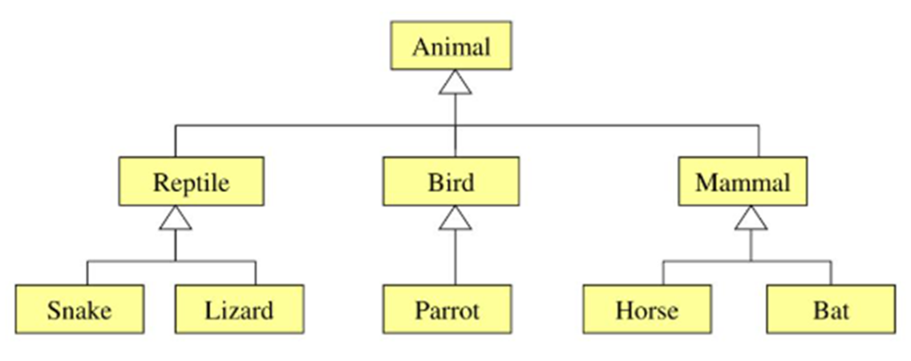

📘 Understanding Class Inheritance in C++
- 🧠 What is Inheritance?
- 🧱 Basic Syntax
- 🧪 Example: Basic Inheritance
- 🔄 Constructor Calls in Inheritance
- 🧬 Types of Inheritance
- 🧪 Example: Multilevel Inheritance
- ✅ Summary
- Practice it!
🧠 What is Inheritance?
Inheritance is a fundamental concept in Object-Oriented Programming (OOP) that allows a class (called the derived class or subclass) to inherit attributes and behaviors (fields and methods) from another class (called the base class or superclass).
🔑 Key Benefits:
- Code reuse: Avoids duplication by reusing existing class functionality.
- Extensibility: Allows new functionality to be added with minimal changes.
🧱 Basic Syntax
class Base {
// base class members
};
class Derived : public Base {
// derived class members
};🔓 Access Modifiers in Inheritance
| Modifier | Description |
|---|---|
public |
Public and protected members of the base class retain their access levels in the derived class. |
protected |
Public and protected members of the base class become protected in the derived class. |
private |
Public and protected members of the base class become private in the derived class. |
class A {
public:
int x;
protected:
int y;
private:
int z;
};
class B : public A {
// x is public
// y is protected
// z is not accessible from B
};
class C : protected A {
// x is protected
// y is protected
// z is not accessible from C
};
class D : private A // private is the default {
// x is private
// y is private
// z is not accessible from D
};🧪 Example: Basic Inheritance
#include <iostream>
using namespace std;
class Animal {
public:
void eat() {
cout << "This animal eats food." << endl;
}
};
class Dog : public Animal {
public:
void bark() {
cout << "The dog barks." << endl;
}
};
int main() {
Dog myDog;
myDog.eat(); // Inherited from Animal
myDog.bark(); // Defined in Dog
return 0;
}🔍 Explanation:
Doginherits fromAnimalusingpublicinheritance.Dogcan accesseat()because it is a public member ofAnimal.
🔄 Constructor Calls in Inheritance
🔍 How Constructors Work in Inheritance
When a derived class object is created, constructors are called in the order of inheritance hierarchy:
- Base class constructor is called first.
- Then the derived class constructor is executed.
This ensures that the base part of the object is properly initialized before the derived part.
🧪 Example: Constructor Call Order
#include <iostream>
using namespace std;
class Animal {
public:
Animal() {
cout << "Animal constructor called." << endl;
}
};
class Dog : public Animal {
public:
Dog() {
cout << "Dog constructor called." << endl;
}
};
int main() {
Dog d;
return 0;
}Output:
Animal constructor called.
Dog constructor called.🧰 Using Initialization Lists in Derived Constructors
You can explicitly call a base class constructor using an initialization list in the derived class:
class Animal {
public:
Animal(string type) {
cout << "Animal: " << type << endl;
}
};
class Dog : public Animal {
public:
Dog() : Animal("Dog") {
cout << "Dog constructor called." << endl;
}
};⚠️ Notes
- If the base class only has a parameterized constructor, the derived class must explicitly call it.
- If the base class has a default constructor, it is called automatically unless specified otherwise.
🧬 Types of Inheritance
| Type | Description |
|---|---|
| Single | One base class, one derived class |
| Multiple | One derived class inherits from multiple base classes |
| Multilevel | A class is derived from a derived class |
| Hierarchical | Multiple classes inherit from a single base class |
| Hybrid | Combination of multiple types (can lead to ambiguity) |
Here is an example of a multilevel inheritance structure.

🧪 Example: Multilevel Inheritance
class Animal {
public:
void eat() { cout << "Eating..." << endl; }
};
class Mammal : public Animal {
public:
void walk() { cout << "Walking..." << endl; }
};
class Human : public Mammal {
public:
void speak() { cout << "Speaking..." << endl; }
};
int main() {
Human h;
h.eat(); // From Animal
h.walk(); // From Mammal
h.speak(); // From Human
return 0;
}✅ Summary
| Concept | Description |
|---|---|
| Base Class | The class being inherited from |
| Derived Class | The class that inherits |
| Access Control | Determines visibility of inherited members |
| Code Reuse | Inheritance promotes modular and reusable code |
💻 Practice it! Inheritance
🧩 Part B-1.1 Create a BlackjackCard class (Inheritance)
- Right-click the Lectures project in the solution explorer and select "Add/Class..."
- Enter
BlackjackCardas the name and enterCardas the base class. Then press enter to create the class. - Add a
constructorthat takes 2 string parameters used to initialize the suit and face.- call the Card's constructor
🧩 Part B-1.2 Create a BlackjackCard object
- Open the
Day8.cpp - Find the comment labeled
TODO: Part B-1.2 Create a BlackjackCard object. After the comment... - Create an instance of your BlackjackCard class. You can use any face and suit.
🧩 Part B-1.3 call GameTextures::RenderImage
- Open the
Day8.cpp - Find the comment labeled
TODO: Part B-1.3 call GameTextures::RenderImage with the BlackjackCard object. After the comment... - call
GameTextures::RenderImagemethod. pass the face and suit of your card object. Also pass the x, y, and scale variables.
🧩 Part B-1.4 call BlackjackCard functions
- Open the
Day8.cpp - Find the comment labeled
TODO: Part B-1.4. After the comment... - call the
Valuemethod and print the value of the card. - call the
Printmethod of the card.